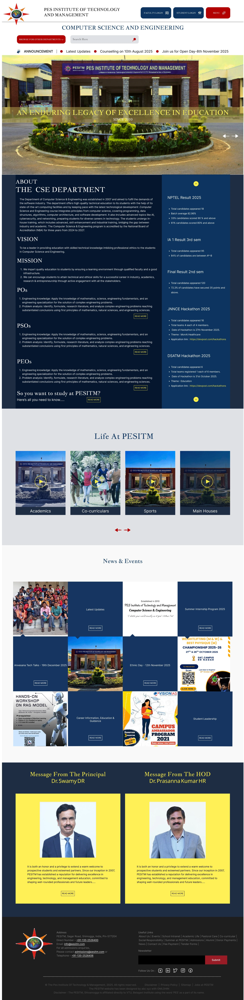
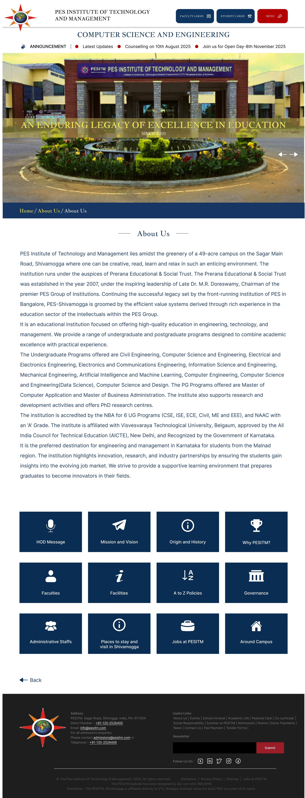
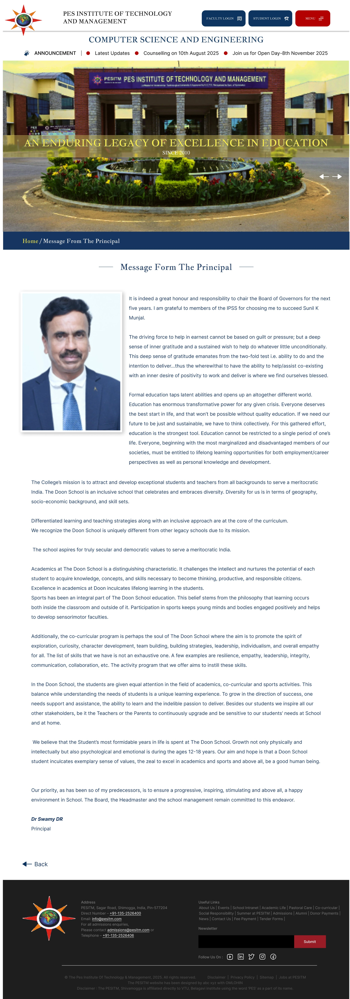

The Challenge
A lot of information, many audiences
A department website has to serve students, parents, faculty and visitors at the same time — each looking for something different.
The challenge was to organise academic information, results, events and announcements so that the most important things are easy to find without the page feeling crowded.
- 01About, Vision & Mission
- 02POs, PSOs & PEOs
- 03Results & hackathons
- 04Life at PESITM
- 05News & events
- 06Principal & HOD messages
- 07Announcements
The Approach
One homepage, four layers
- 1
Announce
A ticker and hero for what's happening right now.
- 2
Inform
About, vision, mission and outcomes, next to live results.
- 3
Engage
Campus life, news and events in visual grids.
- 4
Connect
Messages from leadership, then contact and links in the footer.
Key Design Principles
Three principles
Important updates first
Announcements, results and hackathons sit near the top so students don't have to search for what changes most often.
Structured academic content
Vision, mission, POs, PSOs and PEOs are grouped into short blocks with "Read more" instead of one long wall of text.
Consistent institutional identity
One navy, red and yellow palette with a classic serif keeps every page feeling like the same institution.
Selected Screens
Three key pages
Scroll inside each window to see the full page.
Homepage
Announcements, the department overview, live results, campus life, news and leadership messages — each in its own clearly separated band.
↓ Scroll inside the window

About Us
An overview of the institution followed by a grid of icon tiles, so visitors can jump straight to the section they need.

Message from the Principal
A simple reading layout — portrait, message and signature — with the same header, breadcrumb and footer as every other page.
